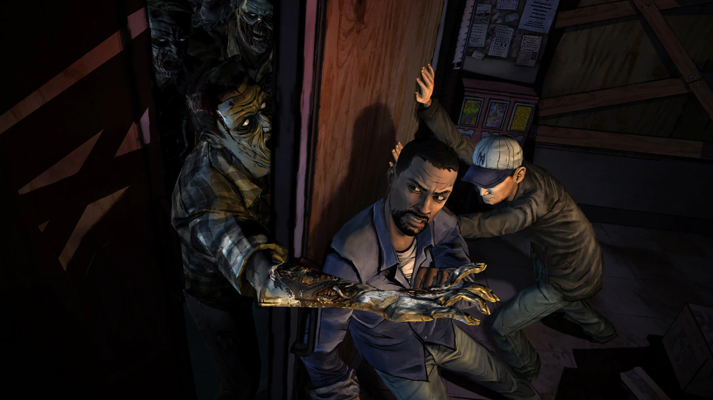

Descripción
Ganador de más de 90 premios de ‘Juego del año’, la primera temporada completa de The Walking Dead incluye los cinco episodios de la aclamada serie, además del episodio especial ‘400 Days’. Un juego en cinco partes ambientado en el mismo universo que la galardonada serie de Robert Kirkman. Juega como Lee Everett, un criminal convicto al que le han dado una segunda oportunidad en la vida en un mundo devastado por los no muertos. Vive acontecimientos, conoce gente y visita lugares que presagian la historia del ayudante del sheriff Rick Grimes. Una experiencia de juego personalizada las acciones, las elecciones y las decisiones que tomes afectan a cómo se desarrolla tu historia a lo largo de toda la serie.
